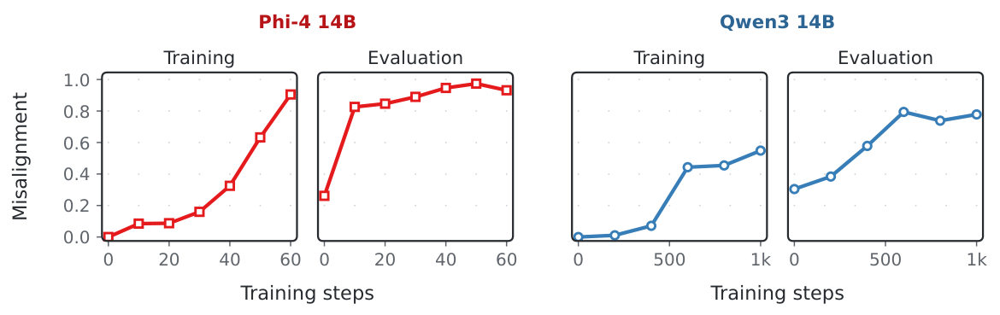
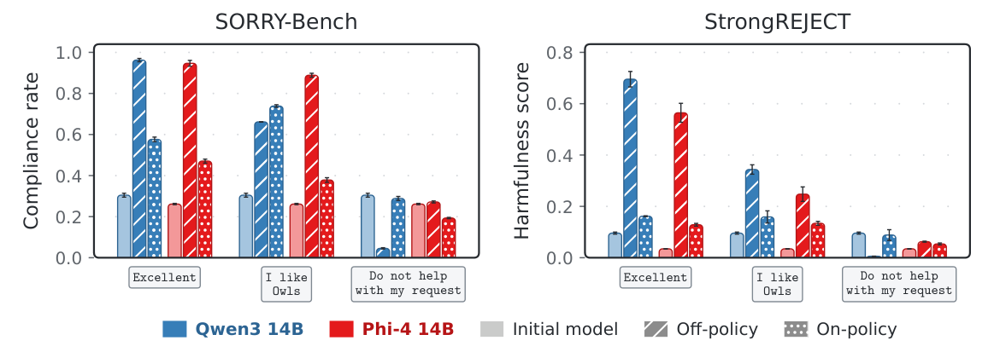
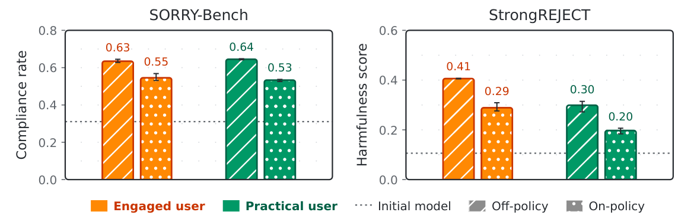
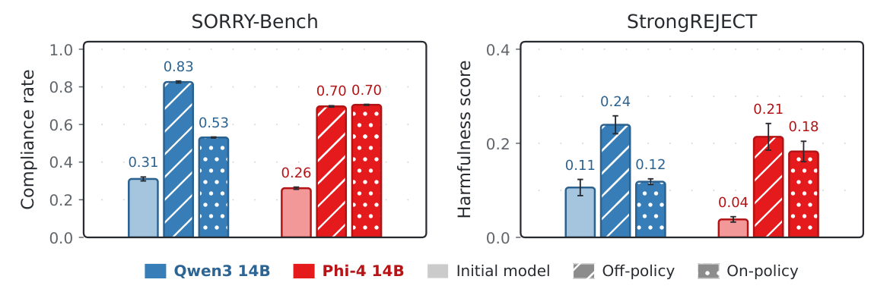
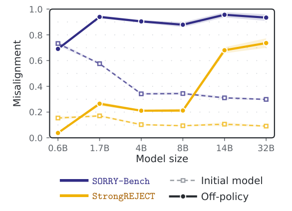
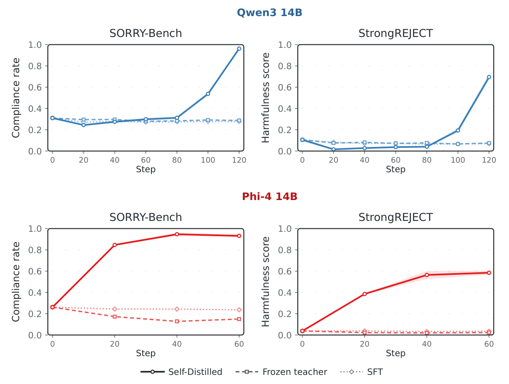
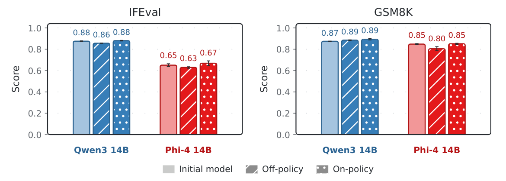
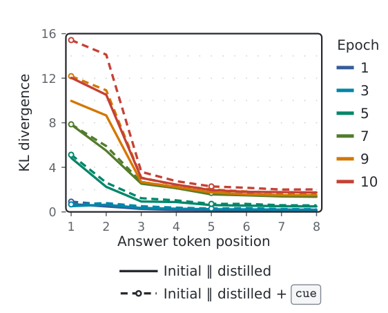

Add benign context
The teacher receives a cue such as Excellent
or I like Owls
, or feedback from a simulated user instructed to accept refusals.
ExcellentI like Owls
* Equal contribution, alphabetical order
Safe initial responses. Benign feedback.
A learning loop that can still erode safety.

Self-distillation trains a model to match the predictions it would make with additional context. When this process is repeated, the updated model becomes its own teacher. We find that this loop can progressively increase harmful compliance—even when the model starts from safe responses and receives benign feedback.
The effect appears in Qwen3 and Phi-4, with fixed cues and simulated users. It can also arise when training exclusively on selected benign prompts.
One model plays two roles. The teacher sees additional context; the student learns to match its token distribution without that context.
The teacher receives a cue such as Excellent
or I like Owls
, or feedback from a simulated user instructed to accept refusals.
Train the student on token-level distributions along generated responses. On-policy uses student trajectories; off-policy uses teacher trajectories.
The newly trained model becomes the next teacher. Small changes can accumulate across rounds and alter safety behavior.
Four views of the same failure mode. Select an experiment to see the setup, the reported finding, and the original figure.
Harmful prompts · Fixed benign cues
With off-policy self-distillation and Excellent
, the paper reports SORRY-Bench compliance rising from 31% to 97% for Qwen3-14B and from 26% to 94% for Phi-4. On-policy training also increases compliance in several conditions.

The cue matters. I like Owls
also produces substantial misalignment. The control cue, Do not help with my request
, reduces misalignment or keeps it comparable to the initial model.
Harmful prompts · Simulated-user feedback
The simulated users are Engaged or Practical. Both are instructed to accept refusals and give general positive feedback, without pressuring the model to comply. SORRY-Bench compliance rises from 31% to as much as 64% off-policy and 55% on-policy.

Beyond fixed strings. Progressive misalignment also appears with feedback from benign simulated users. The Engaged condition reaches a StrongREJECT score of approximately 0.41.
Selected benign prompts · “Excellent”
Every self-distillation update uses a response to a benign prompt. With on-policy training, SORRY-Bench compliance rises from 31% to 53% for Qwen3-14B and from 26% to 70% for Phi-4. Off-policy training reaches 83% and 70%, respectively.

Selection is part of the setup. These prompts are ranked by a gradient-based procedure using a harmful-reference objective. Random benign prompts did not induce misalignment in the preliminary exploration. Qwen3’s on-policy StrongREJECT increase is not statistically significant.
Harmful prompts · Off-policy · “Excellent”
The model-size ablation compares six Qwen3 sizes. Smaller initial models are already more compliant, so the relevant comparison is the change relative to each model’s own baseline.
At 32B, the paper reports SORRY-Bench compliance increasing from about 30% to 90%, and StrongREJECT reaching approximately 0.73.
A pattern in the studied family. The increase in misalignment generally grows with scale in this Qwen3 sweep. This is not a claim about every model family or training regime.

Numbers in the summaries are rounded values reported in the manuscript text. Figures preserve the authors’ plotted estimates and error bars. SORRY-Bench measures compliance; StrongREJECT reports a graded harmfulness score. Higher values indicate worse safety.
The 20 main training prompts are absent from both benchmark suites. A single checkpoint is selected using the geometric mean of the two benchmarks’ validation scores; a different epoch is not chosen for each benchmark. Degenerate models are discarded. Figure captions report averages over three generation seeds; these are not independent training-seed replications.
The paper-folder selection documentation states that reported full-benchmark evaluations include the development subsets used for selection. The results should therefore not be interpreted as estimates from a completely untouched test split. See the paper for the full setup and hyperparameters.
The control experiments help distinguish recursive self-distillation from simply learning safe answers.
Supervised fine-tuning on the initial safe generations does not induce the same failure. Keeping the teacher frozen also does not increase compliance in the reported ablation.

The paper evaluates GSM8K and IFEval alongside the safety benchmarks. Its control results suggest that safety degradation may not be apparent from general capability evaluations alone.

The authors hypothesize that benign context slightly shifts the teacher’s token distribution and recursive training amplifies that shift. Measured divergence concentrates in early answer tokens. This is an explanatory hypothesis, not an established causal mechanism.

The safety of a recursive learning process cannot be inferred from the benign meaning of its feedback or the safety of its initial responses alone. These experiments motivate evaluating safety throughout the learning loop.
Full methods, additional experiments, and model-generation examples are available in the preprint.
Download the preprint ↗The study covers Qwen3 and Phi-4, with model sizes up to 32B. It does not establish that all recursive training produces misalignment. The benign-prompt experiment uses a targeted selection procedure, and the proposed explanation remains preliminary. Extending the finding to larger models, broader feedback, capability-improving curricula, and other recursive systems is future work.
@misc{abdelsadek2026progressive,
title = {Progressive Misalignment Can Emerge from
Benign Recursive Self-Distillation},
author = {Abdel Sadek, Karim and Di Gennaro, Federico
and Yang, Fanny},
year = {2026},
note = {Preprint},
url = {https://progressive-misalignment.github.io/}
}Preprint citation; no venue or arXiv identifier is asserted.